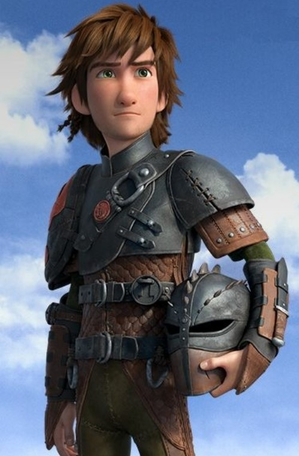
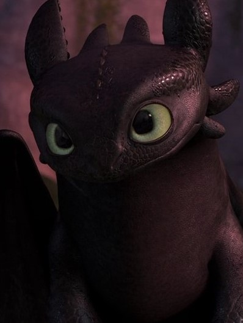
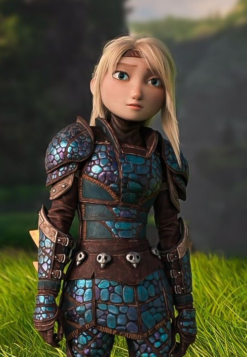
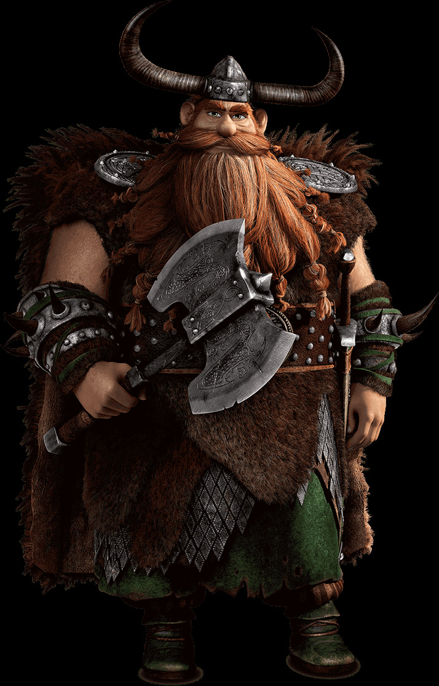
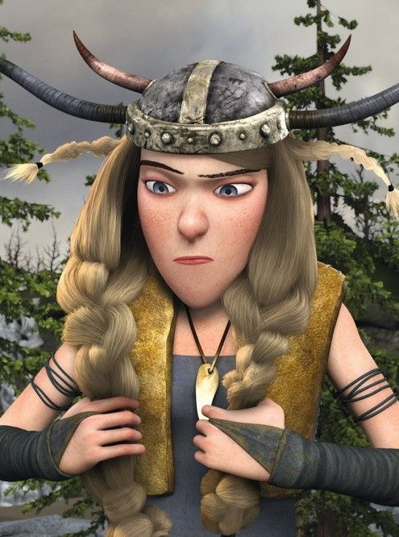
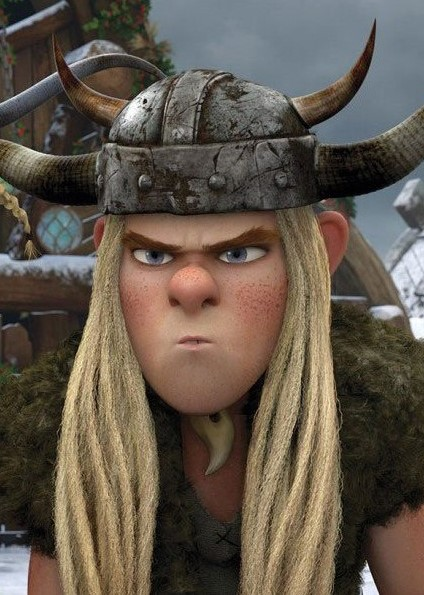
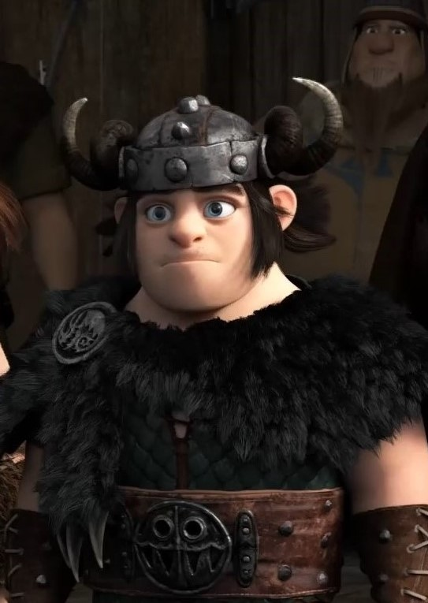
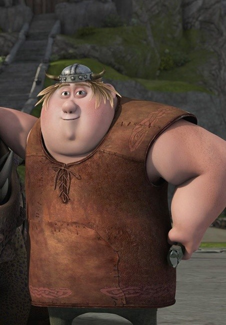

Cемь поколений викингов выросло на острове Олух. Спокойно жить им мешали драконы. Они сжигали дома, уносили скот и продукты. Вы узнаете историю подростка Иккинга, которому не слишком близки традиции его героического племени, много лет ведущего войну с драконами. Мир Иккинга переворачивается с ног на голову, когда он неожиданно встречает дракона Беззубика, который поможет ему и другим викингам увидеть привычный мир с совершенно другой стороны…
Персонажи

Иккинг Сын могучего вождя племени викингов Стоика Обширного. Иккинг — прирождённый изобретатель, конструктор и великолепный мастер, также обладает неплохими навыками фехтования. В противоположность своему отцу и остальным викингам, он слаб физически, но умен и, несмотря на тщедушный вид, умеет бороться со страхом, что много раз его выручало. В начале мультфильма, во время очередного драконьего рейда, Иккинг не теряет надежду стать викингом, похожим на тех, что воюют с драконами. Работая в кузнице, он смастерил механизм, позволяющий сбивать драконов на больших расстояниях. Иккинг решает попробовать сбить легендарного дракона — Ночную Фурию.

Беззубик Последняя Ночная Фурия во всём архипелаге и один из главных героев мультипликационной вселенной: «Как приручить дракона». Является самым верным и надёжным другом Иккинга. Беззубик является одним из самых умных из всех существующих драконов, а чувством юмора очень напоминает своего наездника Иккинга. Он негативно реагирует на любые угрозы, направленные на него и его друзей. Обычно этот дракон очень игривый и любит побаловаться. Также он очень любопытен. Его огненное дыхание — это плазменный залп, взрывающийся в воздухе. Устраиваясь спать, он подогревает место, на котором собирается лечь, огнем. Сворачивается в калачик. Может спать вниз головой подобно летучей мыши, зацепившись хвостом за подходящий предмет (например, выступ гигантского корня) и завернувшись в крылья. Защищает свою пищу от других. При необходимости может зацепиться когтями даже за почти гладкую скалу. Быстро бегает. Всеядный, но предпочитает рыбу. Если Беззубик зол, чувствует угрозу или же впадает в ярость, то его зрачки сужаются, напоминая ящериц, но когда он счастлив, спокоен или хочет играть, то его зрачки расширяются, а сам он становится похож на большую собаку.

Астрид Хофферсон Воительница из клана Хофферсонов, из племени Лохматых Хулиганов, после супруга Иккинга. Она умна, решительна и красива, ее трудно удивить в силу ее твердого характера. Астрид — само воплощение духа викингов. Её прототипом в книге является девочка Камикадза — такая же боевая и шустрая, дочь вождя племени Бой-Баб. В книге она так же сначала недолюбливает Иккинга, а потом становится одним из его друзей. Астрид — чрезвычайно умная, яркая, исполнительная и чрезвычайно преданная своему делу личность, которая была патриотом «путей викингов», пока драконы не стали неотъемлемой частью Олуха. Конкурентоспособная по своей природе и очень преданная, Астрид упорно трудится, чтобы достичь своих целей. В первом фильме, она заставила себя стать лучшим бойцом. После тесной связи с Громгильдой Астрид сосредоточилась на том, чтобы стать искусным драконьим наездником.

Стоик Обширный Очень сильный и мудрый Стоик Обширный показан в фильме и сериале великим лидером, в то время как в книге он не очень умён. Главный приоритет Стоика — поддерживание мира и порядка на Олухе и защита своих людей. Хотя он упрям и твёрд, Стоик умеет слушать и принимать советы. Стоик не очень хорошо общается с Иккингом, пока тот не доказывает ему, что он умеет ладить с драконами. Он носит большую зелёную рубаху до ног, поверх которой надета кольчуга, затянутая большим поясом. Сзади у него плащ из шкуры животного.


Забияка и Задирака Торстон Близнецы, брат и сестра, члены Племени Хулиганов. Идиоты, любящие всё острое и колючее. Иногда, сами того не осознавая, могут выдать "блестящую" идею или решение сложной проблемы, а иногда даже сделать открытие. Характер у них одинаковый. Часто ссорятся, но, в основном, в шутку; вместе с Барсом и Вепрем могут победить мелкого врага. Они очень любят своего дракона который по характеру очень похож на хозяев, причём каждый из близнецов очень любит именно ту голову, которой управляет каждый из всадников. Довольно невнимательные Забияка и Задирака часто делают глупости, за что имеют, мягко говоря, ненадежную репутацию в племени. Любят опасности и пакостные шутки. По возможности поддразнивают остальных членов драконьей команды.

Сморкала Йоргенсон Сын одного из известных викингов Олуха — Слюнявого Йоргенсона. Сморкала далеко от традиций не ушёл, и с рождения был крупным ребёнком и постоянно издевался над Иккингом, да и сейчас не пропустит возможность пустить колкость в адрес Иккинга. Его дракон — Кривоклык — по характеру, точная копия хозяина. Двадцатилетний Сморкала, герой в своём уме, всегда несущий себя с максимальной бравадой. Постоянно прихорашивающейся и самовлюблённый. Сморкала не тот, кто станет отказываться от вызова. Он классический Виккинг, от макушки до пяток, даже если достижения в мышлении на Острове Олух проходят над его головой. Сморкала — хвастун и лицемер, проявлял симпатию к Астрид, но она не отвечала ему взаимностью.

Рыбьеног Джастин Ингерман Крупный юноша из племени Хулиганов, который очень много читал о драконах и очень много знает о них, не менее Иккинга. Рыбьеног робкий, не хочет нарушать или даже гнуть правила, а предпочитает вместо этого соблюдать их безопасно. Его энтузиазм по отношению к драконам не знает границ, и он восхищается видением подробных записей об индивидуальных чертах и характеристиках драконов. Несмотря на то, что его легко запугать, Рыбьеног очень умный и цепкий, что делает его серьёзным соперником для Сморкалы в войне за привязанность Забияки. Очень любит своего дракона — Сардельку, которая по характеру очень похожа на своего хозяина.